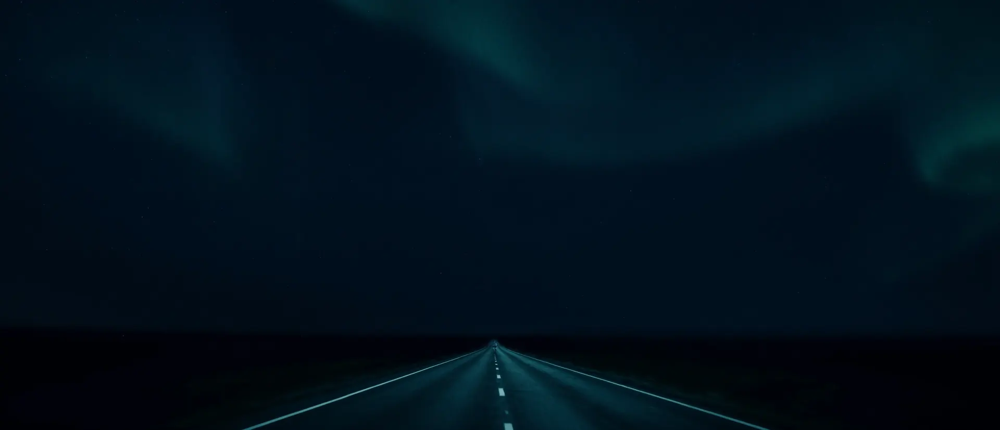
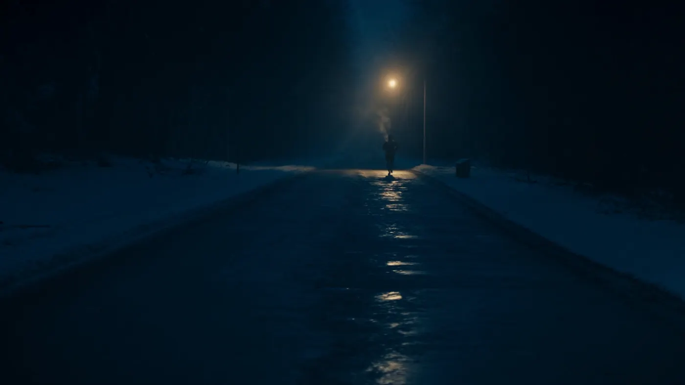
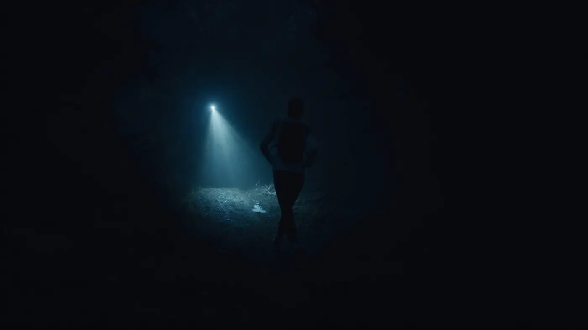
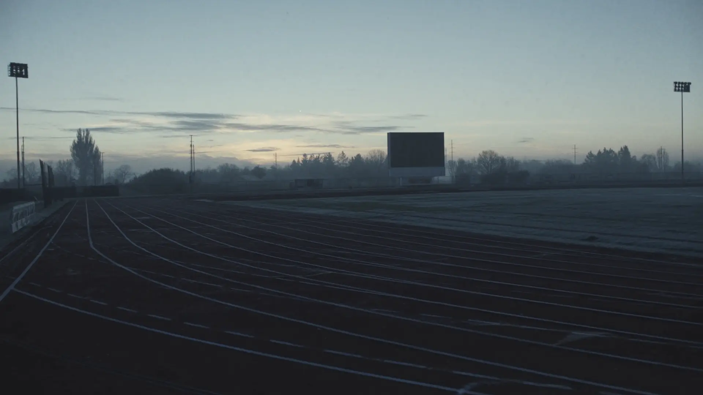

Assess
A gait video, your training history, and one easy run together. We find your current cadence, your honest paces, and what your week can actually hold.
Run-coaching studio · est. before sunrise
Run the hours nobody sees. We'll set the pace.
Structured coaching for early runners — cadence work, honest pacing, and a plan that survives winter.
The first thing we coach
Cadence before mileage, mileage before speed. A quicker, lighter step — around 180 a minute — is the cheapest injury insurance in running, and it's where every Northpace plan starts.
This page keeps that tempo. Every pulse, every entrance, every drift of the sky above is phase-locked to the same clock your feet will learn.
One workout, drawn to scale
A mid-block Tuesday from the Threshold program · 48:00 total
Where the work happens



How coaching works
A gait video, your training history, and one easy run together. We find your current cadence, your honest paces, and what your week can actually hold.
A weekly block in your inbox every Sunday night — sessions, paces, and the why behind each one. Built around your mornings, not the other way round.
We read your splits together every fortnight. The plan bends to the life you actually had — missed days are data, not guilt.
Three ways in
Start running mornings
$79 / monthsample plan pricing
Faster at the same effort
$139 / monthsample plan pricing
Race build
$219 / monthsample plan pricing
The payoff
Every early alarm buys you this: the streets to yourself, the year's best light, and breakfast tasting like a medal.
